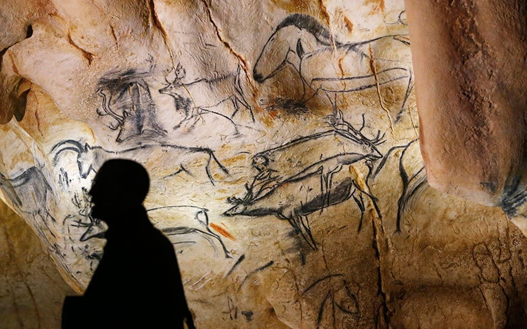
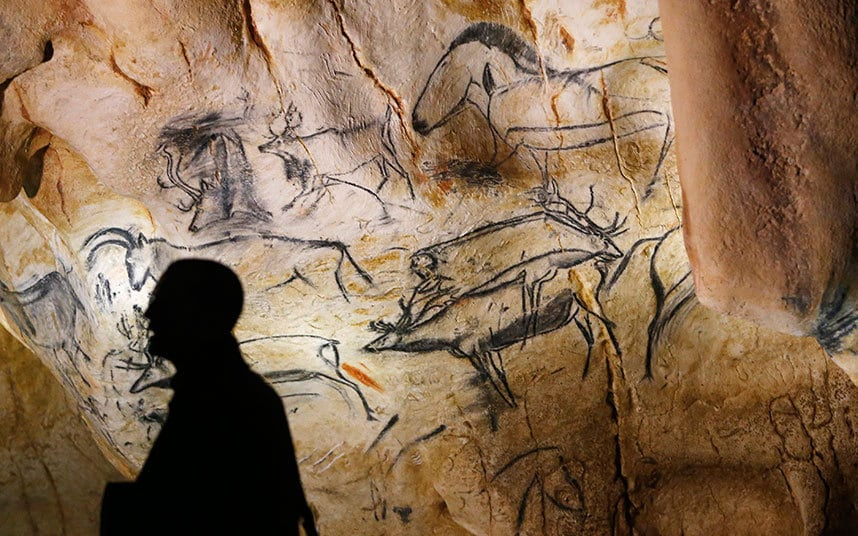

Intent
Cave Art
Ritual, teaching, or storytelling about animals and people.
Street Art
Identity, protest, and public dialogue in cities.
From Paleolithic handprints to subway chalk — humans have always drawn on walls to say: we were here.
Jump to Gallery
A quick comparison of intent, tools, and audience.
Ritual, teaching, or storytelling about animals and people.
Identity, protest, and public dialogue in cities.
Cave: ochre, charcoal, clay; brushes, fingers, air-spray through reeds.
Street: spray paint, rollers, pastes, stencils, chalk.
Cave: clan/community in restricted spaces.
Street: the public — commuters, neighbors, tourists.
Switch between ancient caves and modern street art.
Tap an image to enlarge.

 


Both are wall-based storytelling: presence, community, and memory.
HTML tags styled: h1/h2/h3, p, a, ul/li, figure, figcaption
Classes used: .card, .pad, .eyebrow, .btn, .gallery, .grid-cards